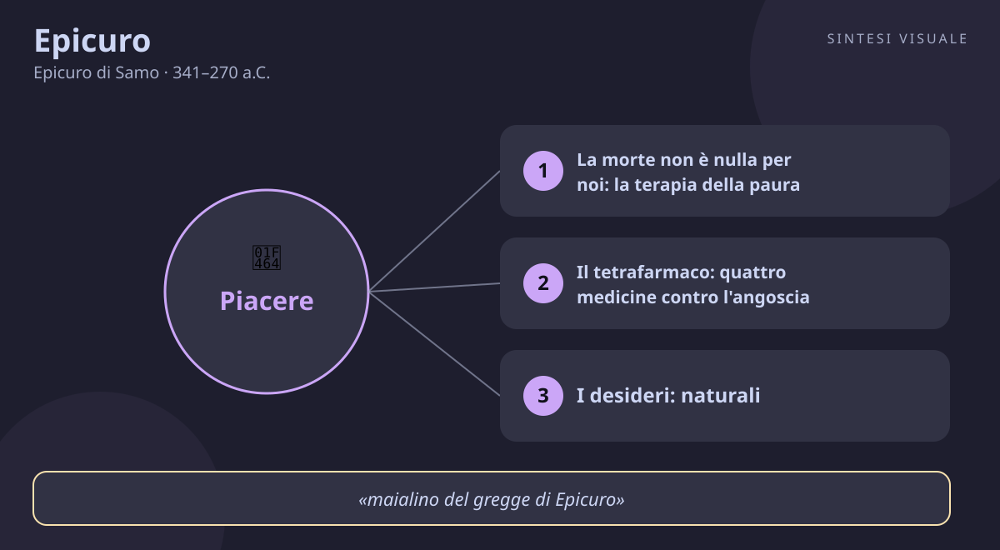

Epicuro
Epicuro di Samo · 341–270 a.C.
«La morte non è nulla per noi»
- Morte
- Tetrafarmaco
- Desideri
- Amicizia
💬La massima
«Abituati a pensare che la morte non è nulla per noi: poiché ogni bene e ogni male è nella sensazione, e la morte è privazione di sensazione.»
— Epicuro, Lettera a Meneceo, 124. La lettera, tramandata da Diogene Laerzio nelle sue Vite dei filosofi (libro X), è il testamento morale di Epicuro: un compendio di etica scritto per un discepolo e pensato per essere imparato a memoria.
Spiegazione. Immagina di passare la vita con un'ombra alle spalle: qualsiasi cosa fai — un viaggio, un amore, un progetto — c'è sempre quel pensiero, «tanto poi si muore». Epicuro ti prende per un braccio e ti dice: quell'ombra non esiste, la stai proiettando tu. Il suo ragionamento è di una semplicità spietata. Bene e male esistono solo dove c'è qualcuno che sente: il caldo, il freddo, la gioia, il dolore. Ma la morte è proprio la fine del sentire: quando ci sei tu, non c'è lei; quando c'è lei, non ci sei tu. Quindi temere la morte è come temere il buio di una stanza in cui non entrerai mai. Non è cinismo né invito all'incoscienza: è una terapia. Epicuro vedeva gli uomini rovinarsi la vita in due modi — correndo dietro a desideri infiniti per «sfuggire» alla morte (fama, ricchezze, potere) oppure paralizzandosi davanti a essa. Tolta la paura, resta la domanda vera: come riempio bene il tempo che ho? La sua risposta è il piacere sobrio, l'amicizia, il pensiero: godersi la condizione mortale invece di avvelenarla col desiderio dell'immortalità.
Il punto sottile. Attenzione: Epicuro non dice che la vita è breve e quindi bisogna strafogarsi di piaceri — quella è la caricatura che i nemici (soprattutto gli stoici e poi i moralisti cristiani) gli hanno cucito addosso. Dice l'opposto: proprio perché il tempo è limitato, bisogna scegliere i piaceri veri, quelli che non lasciano il conto da pagare. Un banchetto smodato finisce in mal di stomaco e rimorsi; una cena semplice con amici veri lascia serenità per giorni. Il saggio epicureo «non rifiuta la vita né teme di non vivere più»: ama vivere, ma non si aggrappa. La morte, dice Epicuro, «non è nulla né per i vivi né per i morti: per gli uni non c'è, e gli altri non ci sono più». Chi capisce questo smette sia di fuggire la morte come il peggior male, sia di invocarla come riposo dai mali della vita — i due atteggiamenti opposti della stessa ignoranza.
Perché conta oggi. Viviamo nell'epoca che rimuove la morte più di ogni altra: la nascondiamo negli ospedali, la filtriamo dalle foto, la esorcizziamo con creme anti-età e promesse di immortalità digitale. E intanto l'ansia corre sotterranea: accumuliamo follower, titoli, oggetti come se un numero potesse salvarci dal tempo. Epicuro ci mette davanti allo specchio: ogni ora passata a inseguire ciò che non serve è un'ora rubata all'unica vita che abbiamo. Se la morte non è nulla per noi, allora tutto il peso torna sul presente — e il presente, vissuto con misura e amici buoni, basta.
👤Biografia
Epicuro nacque nel 341 a.C. a Samo, isola dell'Egeo, da Neocle, maestro di scuola di origine ateniese, e da Cherestrata. La famiglia era di coloni ateniesi: il padre insegnava le lettere ai ragazzi per campare, e il piccolo Epicuro crebbe tra libri e ristrettezze. A diciotto anni andò ad Atene per il servizio militare biennale (l'efebia), proprio mentre moriva Alessandro Magno (323 a.C.) e il mondo greco precipitava nel caos. Poi seguì il padre a Colofone, in Asia Minore, e lì — racconta Diogene Laerzio — cominciò a filosofare da autodidatta, leggendo Democrito e litigando coi maestri: insofferente verso chi ripeteva a memoria senza capire.
Il Giardino. Dopo anni di insegnamento itinerante a Mitilene e a Lampsaco, dove raccolse i primi amici fedelissimi (Metrodoro, Ermarco, Polieno), nel 306 a.C. Epicuro comprò una casa con orto ad Atene, fuori le mura: il Kepos, il Giardino. Non era una scuola come le altre — niente lezioni solenni come nell'Accademia di Platone né portici affollati come la Stoà: era una comunità di amici che vivevano insieme con sobrietà, coltivando l'orto, discutendo, festeggiando ogni mese il ricordo dei fondatori. Nel Giardino entravano anche donne e schiavi, cosa scandalosa per l'epoca: Epicuro accoglieva chiunque volesse imparare a vivere bene. Visse lì per trentasei anni, scrivendo un'enormità (si parla di trecento rotoli) e rifiutando cariche pubbliche e onori.
La fine serena. Epicuro soffrì per anni di calcoli renali, un male atroce e incurabile. Morì nel 270 a.C., a settantadue anni, dopo due settimane di sofferenze — eppure, racconta Diogene Laerzio citando la sua ultima lettera all'amico Idomeneo, il giorno della morte era felice: «trascorrevo l'ultimo e beatissimo giorno della vita» scrivendo agli amici e ricordando le conversazioni passate. Lasciò per testamento il Giardino ai discepoli e provvide alle figlie dell'amico Metrodoro. Un filosofo che muore sereno tra dolori lancinanti è la prova vivente della sua dottrina: il dolore del corpo non tocca la gioia della mente.
Il carattere. Cordiale e affettuoso, l'opposto del saggio burbero: scriveva decine di lettere agli amici lontani, si preoccupava del loro cibo e della loro salute, celebrava l'amicizia come il bene più grande. Testardo nelle dispute — chiamava i rivali con nomignoli pungenti — ma generoso nella vita: condivideva tutto, viveva di pane, acqua e formaggio, e diceva di gareggiare con Zeus in felicità quando aveva una focaccia e un po' d'acqua. Sobrio per scelta, non per miseria: la semplicità era il suo laboratorio della libertà.
📌Sintesi del pensiero
Epicuro vuole una sola cosa: liberare gli uomini dalla paura per renderli felici. La filosofia è per lui un farmaco in quattro dosi (il tetrafarmaco): dio non va temuto, la morte non ci riguarda, il bene è facile da ottenere, il male è facile da sopportare. La natura è atomi e vuoto (come insegnava Democrito); gli dèi esistono ma vivono beati negli spazi tra i mondi e non si occupano di noi. Il piacere — inteso come assenza di dolore nel corpo e di turbamento nell'anima — è il fine della vita, e si raggiunge scegliendo i desideri con saggezza.
- Fisica: tutto è atomi che cadono nel vuoto e si aggregano; anche l'anima è materiale e si dissolve con la morte — perciò nell'aldilà non c'è nulla da temere.
- Conoscenza: ci fidiamo dei sensi, delle anticipazioni e delle sensazioni di piacere e dolore; ciò che non si vede (gli atomi, gli dèi lontani) si conosce per analogia con ciò che si vede.
- Etica: il piacere è assenza di dolore (aponia) e di turbamento (atarassia); i desideri vanno divisi in naturali e necessari, naturali ma non necessari, e vani — solo i primi vanno soddisfatti sempre.
🏛️I temi fondamentali
- La morte non è nulla per noi: la terapia della paura. È il cuore della Lettera a Meneceo (124–125): il male peggiore che immaginiamo svanisce appena lo guardiamo in faccia. Epicuro nota un dettaglio psicologico finissimo: chi dice «temo la morte» in realtà non teme il momento della morte — che non sentirà — ma l'attesa della morte, cioè un film che proietta da solo. È come soffrire oggi per un esame che non ci sarà mai. Esempio concreto: la persona che rimanda ogni gioia «per dopo» — il viaggio, la telefonata all'amico, il dolce la domenica — perché vive come se avesse tempo infinito e insieme teme che finisca tutto. Epicuro rovescia il tavolo: proprio perché tutto finisce, ogni giorno vissuto bene è completo, come un banchetto sobrio che sazia senza nausea.
- Il tetrafarmaco: quattro medicine contro l'angoscia. Gli epicurei riassumevano il maestro in quattro frasi da mandare a memoria: «Non c'è da temere dio; la morte non dà preoccupazione; il bene è facile da procurarsi; il male è facile da sopportare». Contro la religione paurosa: gli dèi sono beati e non puniscono. Contro la morte: vedi sopra. Contro l'insaziabilità: bastano pane, acqua, un tetto e amici per stare bene — il resto è superfluo. Contro il dolore: i dolori forti durano poco, quelli lunghi sono lievi, e la mente può sempre rifugiarsi nei bei ricordi. Esempio concreto: l'ansia da bollette e da status — il vicino cambia auto, i social mostrano ville — si cura col terzo farmaco: chiediti «di cosa ho davvero bisogno per stare bene oggi?». Quasi sempre la risposta è brevissima, e la rincorsa si ferma.
- I desideri: naturali, necessari e vani. La Massima Capitale XXIX insegna a fare la spesa dell'anima: ci sono desideri naturali e necessari (mangiare, bere, ripararsi, filosofare con gli amici), desideri naturali ma non necessari (il pesce pregiato invece del pane, il vino raro invece dell'acqua) e desideri né naturali né necessari (onori, potere, ricchezze immense). I primi vanno soddisfatti subito e costano poco; i secondi si possono godere ogni tanto ma senza diventarne schiavi; i terzi non si saziano mai e vanno recisi. Esempio concreto: lo stipendio che non basta mai non perché manchi il necessario, ma perché ogni aumento alza l'asticella — casa più grande, auto più nuova, vacanze più esotiche. Epicuro direbbe: non sei povero, sei malato di desideri vani; guarisci la lista, non il conto.
- L'amicizia: il bene più grande. «Di tutte le cose che la saggezza procura per la felicità, la più grande è l'amicizia» (Massima Capitale XXVII). Nel Giardino l'amicizia non era un sentimento romantico ma una pratica quotidiana: vivere insieme, aiutarsi, ricordare, filosofare cenando. Epicuro diceva che il saggio affronta i pericoli per l'amico e che l'amicizia rende sicura la vita più di ogni muro o ricchezza. Esempio concreto: pensa a due vite — una da single di successo con mille contatti e nessuno che ti conosca davvero, l'altra con tre amici con cui puoi chiamare alle tre di notte. La seconda, per Epicuro, è immensamente più ricca: perché nei giorni del dolore (malattia, lutto, fallimento) non ti salvano i soldi, ti salvano le persone che restano.
- Il piacere sobrio: aponia e atarassia. Il piacere epicureo non è l'orgia: è aponia (assenza di dolore fisico) e atarassia (assenza di turbamento mentale). Il piacere più intenso non è aggiungere sensazioni, ma togliere mancanze: la sete spenta dall'acqua fresca dà più gioia di qualsiasi cocktail a chi non ha sete. Per questo Epicuro lodava la cucina povera: chi si accontenta di poco gode di tutto, mentre il vizioso non gode più di niente perché ha il palato rovinato. Esempio concreto: la cena semplice con amici veri — pasta, vino onesto, risate — che ricordi per anni, contro il ristorante carissimo dove hai fotografato i piatti e ti sei annoiato. Il primo è piacere epicureo; il secondo è desiderio vano travestito da piacere.
📚Le opere principali
- Lettera a Meneceo (fine IV secolo a.C.). Il compendio di etica tramandato da Diogene Laerzio: in poche pagine, tutto il programma della felicità — gli dèi, la morte, i desideri, il piacere, la saggezza. Tesi centrale: la filosofia serve a vivere felici, a ogni età, e chi capisce che la morte è nulla per noi ha vinto la paura più grande. Conta perché è il testo epicureo più letto da duemila anni: breve, chiaro, imparabile a memoria come una medicina da portare sempre con sé.
- Lettera a Erodoto (fine IV secolo a.C.). Il compendio di fisica: atomi e vuoto, mondi infiniti, origine della civiltà e dei fenomeni celesti senza ricorrere agli dèi. Tesi centrale: se conosci come funziona la natura, smetti di vedere punizioni divine nei fulmini e nelle eclissi. Conta perché mostra il metodo epicureo nella sua purezza — spiegazioni multiple e tutte naturali per ogni fenomeno — e perché senza questa fisica materialista l'etica della liberazione non starebbe in piedi.
- Massime Capitali (XL sentenze, raccolte dalla scuola). Quaranta pillole di saggezza — sull'amicizia, la giustizia, il dolore, gli dèi — da ripetere come un breviario. Tesi centrale: la dottrina intera sta in tasca, pronta all'uso nei momenti difficili. Contano perché inventarono un genere: la filosofia tascabile, fatta per essere ricordata e non solo studiata — antenata di ogni libro di massime venuto dopo.
- Sulla natura (37 libri, perduti tranne frammenti dai papiri di Ercolano). L'opera magna di Epicuro, rotoli carbonizzati ritrovati nella Villa dei Papiri a Ercolano e ancora oggi in corso di decifrazione. Tesi centrale: la spiegazione atomica completa dell'universo, dalla caduta degli atomi alla nascita del linguaggio. Conta perché è il grande libro perduto dell'antichità materialista: Lucrezio lo riversò nel suo poema De rerum natura, che senza Epicuro non esisterebbe.
💬Massime celebri
«Non è possibile vivere felici senza vivere con saggezza, onestà e giustizia; né vivere con saggezza, onestà e giustizia senza vivere felici.» — Massima Capitale V: piacere e virtù non si possono separare — chi bara e ferisce vive nel terrore di essere scoperto, e addio serenità. Conta perché demolisce la caricatura dell'epicureo vizioso: il saggio è anche il più onesto, per puro calcolo della felicità.
«Il piacere è il principio e il fine della vita beata.» — Lettera a Meneceo, 128: ogni scelta si misura sul piacere inteso come assenza di dolore, punto di partenza e traguardo. Conta perché è la frase più fraintesa di Epicuro: letta nel contesto, non predica l'eccesso ma la misura — il piacere stabile, non l'ubriacatura di un'ora.
«Di tutte le cose che la saggezza procura in vista della felicità, la più grande è l'amicizia.» — Massima Capitale XXVII: nessun bene supera gli amici fidati. Conta perché riassume il Giardino intero: la filosofia non è solitudine del genio, ma compagnia di chi cerca insieme a te.
⌛Contesto storico
- Epicuro nacque nel 341 a.C. in un mondo greco allo splendore e sull'orlo del baratro: Atene aveva perso l'egemonia dopo la guerra del Peloponneso ma restava la capitale della cultura, con l'Accademia di Platone e il Liceo di Aristotele appena fondati. Il ragazzo aveva diciotto anni quando Alessandro Magno morì a Babilonia (323 a.C.): l'impero si frantumò tra i generali (i Diadochi), Atene tentò l'ultima rivolta con la guerra lamiana e fu schiacciata. La polis libera — l'assemblea, i cittadini-soldati, la democrazia partecipata — tramontava; al suo posto, grandi regni governati da re lontani: i Tolomei in Egitto, i Seleucidi in Asia, gli Antigonidi in Macedonia.
- La società in cui crebbe era segnata dall'insicurezza: guerre continue, colpi di Stato, tiranni che si succedevano ad Atene sotto tutela macedone, carestie e mercenari. Il cittadino non decideva più nulla del proprio destino politico: di qui la fuga verso l'interiorità che accomuna tutte le scuole ellenistiche. Mentre Epicuro piantava il suo Giardino (306 a.C.), Zenone fondava la Stoà dipinta e Pirrone predicava la sospensione del giudizio: tre risposte diverse alla stessa angoscia — ritirarsi con gli amici, resistere col dovere, dubitare di tutto. Intanto a ovest cresceva una potenza destinata a inghiottire tutto: Roma stava vincendo le guerre sannitiche e di lì a poco avrebbe sbaragliato Pirro (280–275 a.C.).
- La vita quotidiana era semplice e dura: case modeste, olio e grano come base del cibo, schiavitù ovunque, donne escluse dalla vita pubblica — ed è rivoluzionario che il Giardino accogliesse donne (come Leonzio, filosofa stimata) e schiavi (come Miso). La religione ufficiale mescolava riti civici e superstizioni paurose: indovini, maledizioni, paura degli inferi popolavano l'immaginario, ed Epicuro vi vide la principale fabbrica di infelicità. La scienza brancolava tra genio e mito: Euclide scriveva gli Elementi ad Alessandria mentre gli astrologi vendevano oroscopi.
- Da chi è stato influenzato Democrito di Abdera, il padre dell'atomismo, letto e corretto (Epicuro aggiunge la deviazione spontanea degli atomi, il clinamen); i Cirenaici di Aristippo, edonisti rivali da cui si distinse per la misura; Aristotele, di cui ereditò l'osservazione della natura pur rifiutandone la metafisica; la tradizione medica di Ippocrate, da cui prese l'idea della filosofia come terapia dell'anima.
- A chi ha trasmesso al poeta latino Lucrezio, che nel De rerum natura (I secolo a.C.) rese Epicuro immortale; a Orazio, che si dichiarò «maialino del gregge di Epicuro»; a Filodemo e alla biblioteca di Ercolano; dopo secoli di oblio medievale, a Gassendi e all'edonismo rinascimentale, agli illuministi materialisti, a Mill e all'utilitarismo, a Nietzsche (che lo ammirò come unico tra i greci) e fino alla psicoterapia moderna, che usa tecniche epicuree senza saperlo.
🌊L'eredità
- L'epicureismo divenne la prima «chiesa» filosofica dell'antichità: comunità sparse dal Mediterraneo all'Asia Minore — come quella di Enoanda, dove il filosofo Diogene incise la dottrina su un muro di pietra lungo ottanta metri perché tutti potessero leggerla — celebravano ogni mese il ricordo di Epicuro come un compleanno. Lucrezio ne fece il poema cosmico che attraversò i secoli: senza il De rerum natura, riscoperto nel 1417 da Poggio Bracciolini in un monastero tedesco, il Rinascimento scientifico avrebbe avuto un'altra storia — Galileo, Gassendi e perfino Darwin bevvero a quella fonte atomista.
- Il cristianesimo lo combatté come nemico numero uno — Dante mette gli epicurei, «che l'anima col corpo morta fanno», tra gli eretici dell'Inferno (canto X) — ma ne assorbì l'arte di vivere: la fraternità delle comunità, la semplicità volontaria, la cura dell'anima giorno per giorno. Nell'età moderna Epicuro resuscita dovunque si misuri la morale sulla felicità terrena: nell'utilitarismo di Bentham e Mill («la massima felicità per il maggior numero»), nel liberalismo del piacere onesto, nella psicologia contemporanea che prescrive gratitudine, amicizie e desideri sobri come ricette anti-ansia. Ogni volta che un terapeuta dice «distingui ciò che puoi controllare da ciò che desideri invano», Epicuro sorride dal Giardino: lo diceva già lui, ventitré secoli fa.
🌍Esempi di oggi
- La notifica che rovina la cena. Sei a tavola con amici veri, la pasta è buona, si ride — e intanto controlli il telefono ogni tre minuti: mail di lavoro, like, notizie di disastri. Torni a casa esausto senza aver goduto di nulla. Epicuro direbbe: avevi in mano il piacere vero (amicizia, cibo semplice, presenza) e l'hai barattato con desideri vani (l'approvazione di sconosciuti, la paura di perderti qualcosa). Il farmaco è banale: telefono in un cassetto per due ore. Il piacere non va cercato lontano: va difeso da ciò che lo interrompe.
- La rincorsa allo stipendio che non sazia. Prendi di più di cinque anni fa, eppure sei inquieto come allora: l'auto del collega, la casa più grande vista su un sito, la vacanza «da sogno» che ora sembra dovuta. È la malattia dei desideri vani: ogni traguardo alza l'asticella invece di dare pace. Il test epicureo è una sera a conti fatti: elenca ciò che ti serve davvero per stare bene (salute, affetti, lavoro dignitoso, un po' di bellezza) e ciò che insegui per non sentirti da meno. Quasi sempre scopri che eri già ricco — e che la povertà era nell'elenco, non nel conto.
- L'ansia della sera prima degli esami (o del colloquio). Rimugini catastrofi: «e se sbaglio tutto, e se mi giudicano, e se fallisco?». Metà della sofferenza è attesa di un male che non c'è ancora — esattamente come la paura della morte che Epicuro smonta. Il saggio non nega il rischio: prepara ciò che può (studia, dorme, arriva puntuale) e lascia andare il resto, ricordando che un insuccesso si sopporta e spesso dura poco. Come dice il quarto farmaco: il male forte dura poco, quello lieve si sopporta — e intanto la serata con un amico che ti vuole bene vale più di tre ore di rimuginio.
📄Epicuro di Samo (341–270 a.C.), il saggio del Giardino che insegnò a non temere la morte
Ritratto (busto marmoreo di Epicuro, copia romana da originale ellenistico — pubblico dominio, Wikimedia Commons):
🧠Quiz
Rispondi in chat con la lettera di ogni risposta, es. 1B 2A 3C 4D 5A. Oppure copia e rispondi così: «Quiz Epicuro: 1B 2A 3C 4D 5A» (usa - per le risposte che salti).
1 Secondo Epicuro, perché «la morte non è nulla per noi»?
2 Che cos'è il tetrafarmaco epicureo?
3 Come distingue Epicuro i desideri?
4 Che ruolo ha l'amicizia nel Giardino di Epicuro?
5 Quale affermazione descrive davvero il piacere secondo Epicuro?
✅Soluzioni — tocca per vedere
1B – 2C – 3B – 4C – 5B
🔁Ripasso
- Morte e sensazione: se sbagli la 1, rileggi il passo della Lettera a Meneceo: bene/male = sensazione; la morte toglie la sensazione, quindi non è un male per nessuno — né vivi né morti.
- Tetrafarmaco: se sbagli la 2, memorizza le quattro frasi (dio, morte, bene facile, male sopportabile): è il riassunto tascabile di tutta la dottrina, nato per essere ripetuto nei momenti difficili.
- Desideri: se sbagli la 3, pensa alla «spesa dell'anima»: pane e amici sempre, lussi ogni tanto, potere e fama mai — la felicità costa poco, l'infelicità costa carissima.
- Amicizia e piacere sobrio: se sbagli la 4 o la 5, ricorda il Giardino: non un'orgia ma una cena semplice tra amici — e che il piacere più grande è togliere un dolore, non aggiungere uno stimolo.
🖼️In un colpo d’occhio

Tocca l’immagine per ingrandirla.